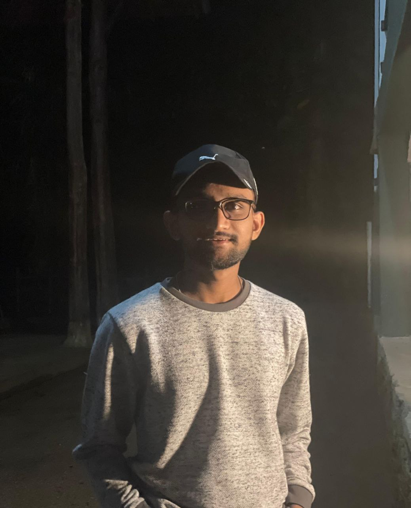

Hansana Samaraweera
Aspiring AI Engineer
Malabe, Sri Lanka
Sri Lanka Institute of Information Technology
hansanasamaraweera13@gmail.com
+94 70 453 6477
About Me
I'm a Data Science undergraduate focused on developing the skills, projects, and engineering mindset needed to become an AI engineer.

Aspiring AI Engineer
Malabe, Sri Lanka
Sri Lanka Institute of Information Technology
hansanasamaraweera13@gmail.com
+94 70 453 6477
My Story
My main interest is AI engineering: building the models, workflows, and supporting software that turn data into useful intelligence. I enjoy working across machine learning, backend logic, and product thinking to create systems that solve real problems.
Beyond coursework, I spend time building AI-focused personal projects, learning modern tools, and strengthening the foundations needed for production-ready intelligent applications.
Trajectory
Studying at SLIIT with a focus on analytics, machine learning, software development, and the foundations required for AI engineering.
Strengthening experience through agentic AI tools, predictive systems, computer vision, analytics, and end-to-end intelligent applications.
Looking for opportunities where I can grow as an AI engineer by contributing to intelligent products, research, and real-world systems.
How I Work
I like breaking complex problems into clear steps, especially when building data and AI systems that need to be understandable and reliable.
What Matters
I care most about building AI that is practical, well-structured, and connected to real user or business value.
What I'm Seeking
I'm excited by teams working on machine learning, intelligent automation, computer vision, and AI products that create meaningful impact.